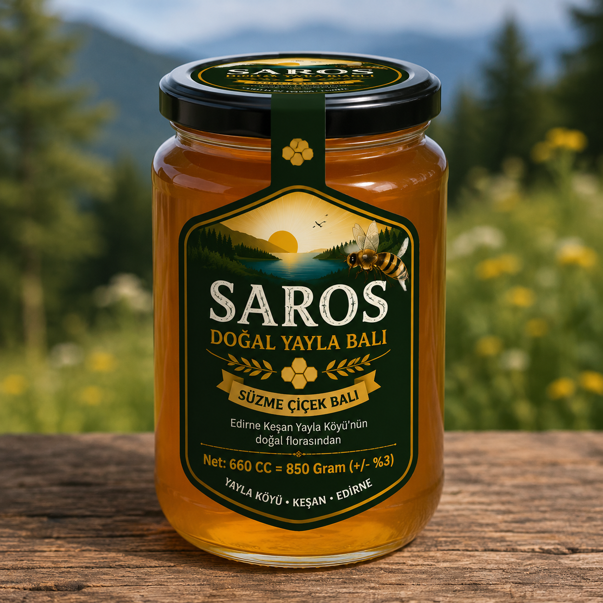

Bir kavanozdan fazlası:
Yaylaköy'den gelen emek.
Saros Doğal Yayla Balı'nın hikâyesi 2020 yılında Ahmet Bakraç'ın arıcılığa hobi olarak başlamasıyla açıldı. Zamanla ailece sahiplenilen bu yolculuk, bugün de aynı özenle sürüyor.
Arılarımızın bakımından hasada ve paketlemeye kadar üretim sürecini yakından takip ediyoruz.
Aile hikâyemizi okuyun →